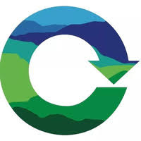

Miscellaneous
Achievements
- Flipkart Gridlock Hakathon - Reinforcement Learning to solve Bangalore Traffic - Semifinalist (top 30 out of 1000+ teams)
- Wooqer web hackathon for interns - first place
- IASc-INSA-NASI Summer Research Fellow 2015
Volunteering
Trashin.in
Trashin (trashin.in) is a "Swach Bharath" app that aims to increase the number of trashbins in the city along with B2B recycling solutions. I volunteered for the tech team, and worked on backend.

Shiksha
Shiksha.com (shiksha.com) is a platform that connects education seekers with the education providers. Being in one of the top 10 engineering colleges in India, I was eligible to mentor prospective engineering students on behalf of Shiksha.